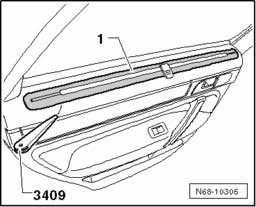
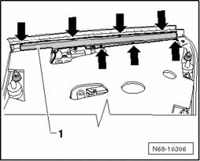

Sun Shade, Rear Door Trim, Removing and Installing
Sun Shade, Rear Door Trim, Removing And Installing
Removing
NOTE: Removal and installation is described for the left-hand side of the vehicle. Removal and installation for the right-hand side is performed in the same manner.

- Pry the cover -1- out of the door trim using the Trim Removal Wedge 3409
- Rear Door Trim, Removing.

- Remove the seven bolts -arrows- on the rear side of the door trim.
- Remove the shade -1- downward out of the door trim.
Installing
- Installation is performed in the reverse order of removal.